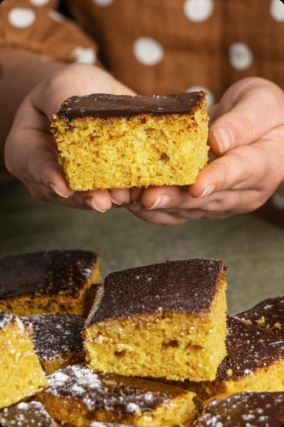
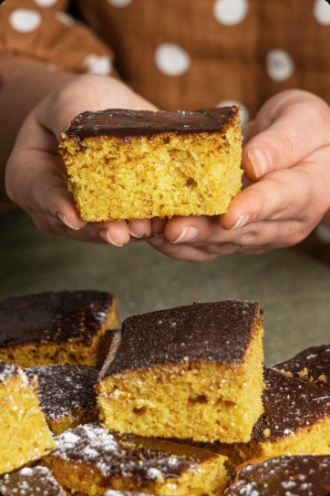
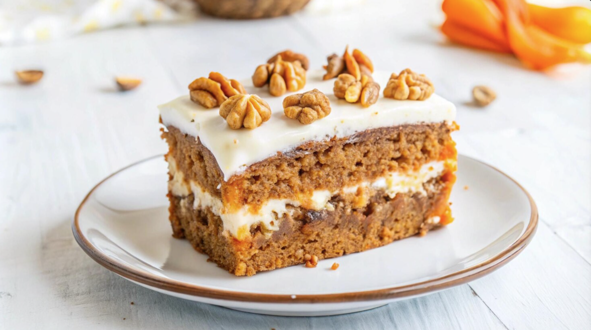
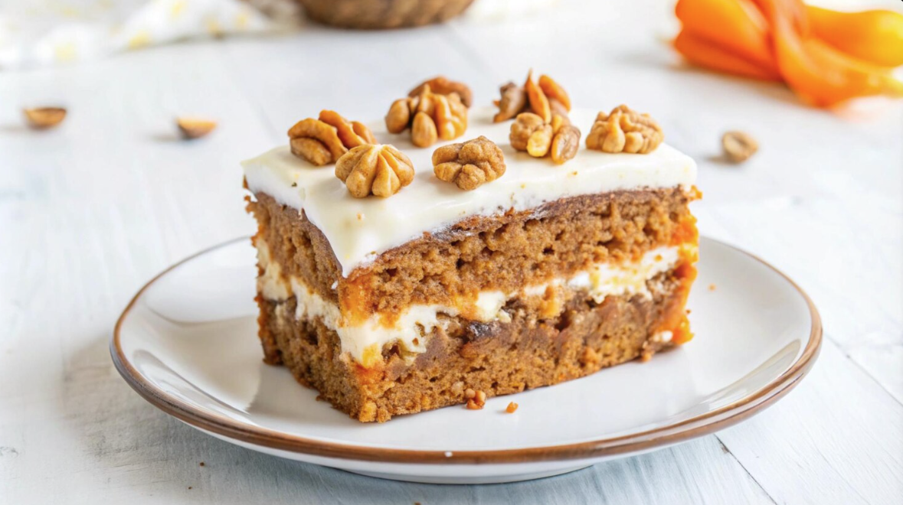

O melhor tutotial de bolo
bolo de cenoura
incredientes lista de ingredientes
Modo de Preparo
 

massa do bolo
 

1.Em um liquidificador, bata as cenouras, os ovos e o óleo
2.Despeje a mistura em um recipiente e misture o açúcar e a farinha de trigo peneirada com o fermento.
3.Coloque em uma fôrma retangular (20 x 30 cm) untada, e leve ao forno médio (180°C), preaquecido, por 40 minutos.
4.Enquanto isso, prepare a cobertura de brigadeiro.
Cobertura de Brigadeiro
5.Em uma panela coloque o Leite MOÇA, o Chocolate em Pó DOIS FRADES e a manteiga e leve ao fogo baixo, mexendo sempre, até começar a desprender da panela.
6.Despeje ainda quente sobre o bolo, distribua o chocolate granulado e deixe esfriar.
Aproveite o bolo de cenoura
© Lorran Eduardo